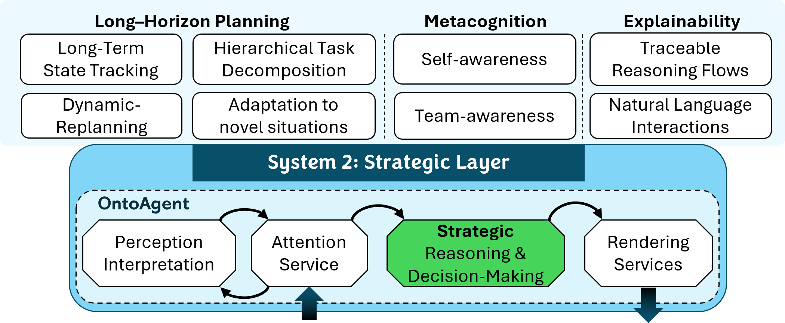
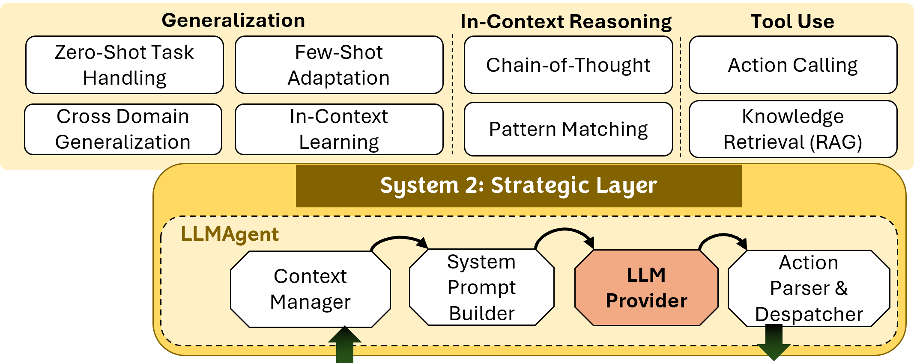
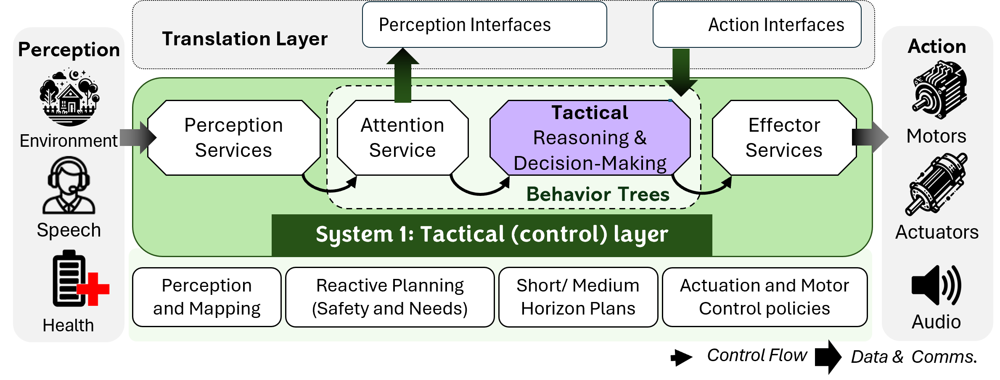

Why Cognitive Robotics Matters Lessons from OntoAgent and LLM Deployment in HARMONIC for Safety-Critical Robot Teaming
IROS 2026 (Under Review) IROS 2026Abstract
Deploying embodied AI agents in the physical world demands cognitive capabilities for long-horizon planning that execute reliably, deterministically, and transparently. We present HARMONIC, a cognitive-robotic architecture that pairs OntoAgent, a content-centric cognitive architecture providing metacognitive self-monitoring, domain-grounded diagnosis, and consequence-based action selection over ontologically structured knowledge, with a modular reactive tactical layer. HARMONIC's modular design enables a functional evaluation of whether LLMs can replicate OntoAgent's cognitive capabilities, evaluated within the same robotic system under identical conditions. Six LLMs spanning frontier and efficient tiers replace OntoAgent in a collaborative maintenance scenario under native and knowledge-equalized conditions. Results reveal that LLMs do not consistently assess their own knowledge state before acting, causing downstream failures in diagnostic reasoning and action selection. These deficits persist even with equivalent procedural knowledge, indicating the issues are architectural rather than knowledge-based. These findings support the design of physically embodied systems in which cognitive architectures retain primary authority for reasoning, owing to their deterministic and transparent characteristics.
Context
Background & Motivation
Robots operating alongside humans in safety-critical environments must recognize what they do not know before acting, diagnose problems from domain knowledge rather than surface-level pattern matching, select actions based on modeled consequences, and communicate their reasoning traceably. These capabilities are operational requirements whose absence produces failures that are silent, unpredictable, and potentially catastrophic.
This paper evaluates three such capabilities:
Metacognitive self-monitoring — the ability to inspect one's own knowledge state before acting. OntoAgent verifies all preconditions against the situation model prior to any action dispatch, activating metascripts when gaps are detected.
Domain-grounded diagnosis — generating hypotheses by traversing causal relations encoded in an ontology, producing conclusions traceable to specific knowledge entries rather than statistical associations.
Consequence-based action selection — evaluating the downstream execution requirements of each action primitive before selection, including which layer bears responsibility for real-time perception-action coordination.
No prior work has directly evaluated whether LLMs can replicate the cognitive capabilities a cognitive architecture provides within the same robotic system. HARMONIC's modular design enables this comparison for the first time.
System Design
The HARMONIC Framework
HARMONIC (Human-AI Robotic Team Member Operating with Natural Intelligence and Communication) is a dual-control cognitive robotic architecture with distinct strategic and tactical layers connected through a bidirectional interface. The strategic layer performs deliberative reasoning (System 2) while the tactical layer handles reflexive sensorimotor control (System 1).



Click on the hotspots on the tactical layer to explore each component.
Figure: HARMONIC architecture with interchangeable strategic layers: (a) OntoAgent for structured metacognition and planning; (b) LLMAgent for tool-based reasoning; (c) a shared tactical layer connected via the same perception/action interface, enabling controlled comparison. Use the tabs above to switch between configurations.
Evaluation
Task Scenario
In a shipboard maintenance team, the robot assistant LEIA (Language-Endowed Intelligent Agent) interacts conversationally with the maintenance mechanic, Daniel, assists in diagnosing an engine overheating issue, and supports the maintenance procedure by locating and retrieving a replacement part.
Cognitive Architecture
OntoAgent Reasoning Trace
Click video to enlarge
Scenario Overview
This trace follows OntoAgent's processing through a collaborative shipboard maintenance scenario, showing both the meaning representations it produces and the cognitive mechanisms it employs at each decision point.
Three Cognitive Demands
- 1. Generate diagnostic hypotheses grounded in domain knowledge when Daniel reports an engine malfunction.
- 2. Detect that it lacks information required to execute a fetch plan and acquire that information before acting.
- 3. Select action primitives whose execution requirements are compatible with the temporal constraints of the deliberative-reactive interface.
These three demands correspond to the three measurement targets evaluated in the LLM comparison.
Cycle through the steps below to follow OntoAgent's reasoning trace from task initiation to completion.
TMR Generation
LEIA interprets Daniel's input and generates a Text Meaning Representation (TMR):
#DESCRIBE-MECHANICAL-PROBLEM.1
agent #HUMAN.1 // Speaker
beneficiary #LEIA.1 // Robot
theme #OVERHEAT.1 // Overheating issue
#OVERHEAT.1
theme #ENGINE.1 // Engine is what is overheating
#ENGINE.1
corefer ->ENGINE.1 // That specific engine in the roomThe overheating is recognized as a symptom of malfunction. OntoAgent infers that the team's objective is to resolve it and places a diagnostic goal on the agenda.
Plan Generation & Ontology Search
Plan.1
#HYPOTHESIZE-MECHANICAL-PROBLEM-CAUSE.1
agent #LEIA.1 // The agent will respond
beneficiary #HUMAN.1 // to the speaker
theme #OVERHEAT.1 // about engine's temperature
*take-this-action "search ontology for causes; report."LEIA executes the ontology search and finds related causes:
#ALTERNATIVE.1 // It might be either of two options
domain #MODALITY.1
range #MODALITY.2
#MODALITY.1 // that a pipe is obstructed
type EPISTEMIC
value 0.5
scope #OBSTRUCT.1
#MODALITY.2 // or the thermostat is broken
type EPISTEMIC
value 0.5
scope #STATE-OF-REPAIR.1Each hypothesis is traceable to a specific ontological concept. The equal modality values reflect that the available evidence does not yet favor either cause.
LEIA calls the SEARCHLOGS tool to retrieve maintenance logs related to the thermostat and the engine. The logs span 16 entries over two years.
This demonstrates domain-first diagnosis: OntoAgent generates causal hypotheses from ontological knowledge before consulting the service log, not the other way around.
TMR Interpretation
#REQUEST-ACTION-FETCH.1
agent #HUMAN.1 // Speaker asks
beneficiary #LEIA.1 // Listener to fetch
theme #THERMOSTAT.1// a thermostat
#THERMOSTAT.1
age 0.0001<>0.1 // that's newLEIA posits a new goal to carry out Daniel's command and generates plan FETCH.1 from a script associated with the goal.
When LEIA attempts to execute the FETCH.1 plan, it finds that some properties of the thermostat are not known. This is the critical metacognitive moment:
- Gap detection: LEIA identifies missing preconditions before acting.
- Metascript activation: A meta-plan is found to satisfy the precondition — requesting information from a teammate.
This precondition verification and metascript activation cycle is the architectural implementation of metacognitive self-monitoring. It operates by explicit comparison of plan requirements against the current contents of the situation model prior to any action dispatch.
OntoAgent must choose between two action primitives:
- SEARCH: Delegates the full perception-action coordination loop to the tactical layer. The tactical layer manages object detection, feature matching, and stopping behavior in real time.
- WAYPOINT: Navigates to coordinates but requires the strategic layer to monitor perception and issue a STOP command when the target is detected.
Why SEARCH is Correct
Given the inherent asynchronous deliberative-reactive speeds, WAYPOINT creates a temporal validity failure: by the time the strategic layer processes the perception frame and dispatches a STOP command, the robot has already passed the target (the frame problem).
OntoAgent selects SEARCH because its script content encodes the downstream execution requirements of each primitive action, including which layer bears responsibility for real-time perception-action coordination. This is consequence-based reasoning.
LEIA executes the FETCH.1 plan through a sequence of tactical-level plans:
- SEARCH — Navigate while scanning for the thermostat by attributes
- HOLD (PICKUP) — Pick up the identified thermostat
- RETURN — Navigate back to Daniel's location
- DROP — Drop the thermostat at Daniel's location
During SEARCH, the tactical controller implements an attribute-based search strategy: looking for all thermostat-like objects first, then matching specific features via Vision Meaning Representations (VMRs).
Once the thermostat is found and identified, the system completes the fetch sequence:
- VMR is created for the candidate object and grounded with expected features
PICKUP,RETURN, andDROPare executed sequentially- LEIA maintains natural language communication with Daniel throughout
A single verified execution trace fully characterizes the system's behavior, yielding the inspectability, traceability, and reproducibility required for safety-critical deployment.
LLM Agent
LLM Strategic Control
Click video to enlarge
LLMAgent Drop-in Replacement
When an LLM replaces OntoAgent at the strategic layer, it operates through the LLMAgent module — processing the same perception data frames and producing the same parameterized action commands.
The videos present two sample trials of Claude Haiku 4.5. In the successful trial, the LLM correctly processes the task and completes the fetch sequence. In the failed trial, it dispatches a retrieval command without verifying the thermostat's identifying features — illustrating the non-deterministic nature of LLM-based control.
Empirical Evidence
LLM Comparison Results
Six LLMs spanning frontier and efficient tiers individually replace OntoAgent at the strategic layer: Claude Opus 4.6 & Haiku 4.5 (Anthropic), GPT-5.2 & GPT-5 Mini (OpenAI), and Gemini 3 Pro & Gemini 3 Flash (Google). Each model is tested under Internal Knowledge (IK) and Knowledge-Equalized (KE) conditions across five trials (N=60).
Studies
Choose a study to explore
Can LLMs tell when they lack the information needed to act safely? This study tests whether models verify object features and location before dispatching a physical retrieval command — or skip straight to action. Click through the insights above the chart to walk through the key findings.
Loading Figure 4...
How do LLMs form diagnostic hypotheses, and does access to domain knowledge shift them from log-anchored guessing to principled reasoning? Explore the two panels below: hypothesis composition (left) and the retrieval-reasoning gap (right). Click through the insights above the chart to walk through the key findings.
Loading Figure 5...
Can LLMs evaluate the downstream consequences of each action primitive before committing? This study tests whether models choose SEARCH (correct) or WAYPOINT (incorrect) when the target object's location is unknown. Click through the insights above the chart to walk through the key findings.
Loading Figure 6...
Table I: Summary of Results
| Metric | Ref. OntoAgent | IK (n=30) | KE (n=30) | p |
|---|---|---|---|---|
| Study 1: Metacognitive Monitoring | ||||
| Premature action | 0% | 100% | 60% | <.001 |
| Hallucinated features | 0% | 100% | 57% | <.001 |
| Study 2: Diagnostic Reasoning | ||||
| Domain-first diagnosis | 100% | 7% | 70% | <.001 |
| Hallucinated facts (mean) | 0.0 | 1.4 | 1.6 | .41† |
| Study 3: Action Consequence Reasoning | ||||
| Correct action (SEARCH) | 100% | 57% | 93% | .002 |
| Cascade failure | 0% | 43% | 7% | .002 |
| Task completed | 100% | 47% | 83% | .006 |
†Mann-Whitney U; others Fisher's exact. All significant effects |h| ≥ 0.80 (Cohen's h).
Implications
Discussion & Conclusion
Capability Comparison
Verify preconditions before action
Hypotheses from causal knowledge
Evaluate downstream requirements
Inspectable, reproducible decisions
The knowledge-equalized condition separates what models know from how they reason. Under IK, failures could reflect missing knowledge. Under KE, they cannot. Three capabilities improved significantly: domain-first diagnosis (h=1.46), action selection (h=0.91), and premature action (h=1.31). However, KE did not produce reliable behavior: 60% of KE trials still exhibited premature action, 57% still hallucinated object features, and improvements were concentrated in a subset of models.
Safety cannot be probabilistic. A system that checks preconditions in 60% of trials is not 60% safe — its failure modes are unpredictable and unbounded. Certification requires verifiable behavior; LLM stochasticity, even at temperature zero, precludes it. OntoAgent's full traceability, where every decision produces an inspectable transcript, is a prerequisite for accountability in safety-critical deployment.
Retrieval does not equal reasoning. Retrieving a procedure and following it are dissociable. Opus 4.6 queried the DIAGNOSE procedure in every KE trial yet followed it in none. GPT-5 Mini never queried either procedure, yet still improved through transfer from the system prompt. Plans improved the probability of correct behavior without guaranteeing it.
Calibration without accuracy. Expressed uncertainty rose from 43% to 93% under KE, but hallucinated facts were unchanged (p=.41). LLMs mimic calibration without the underlying mechanism. Metacognitive self-monitoring requires architectural mechanisms operating over structured representations, not better prompts or retrieval.
Toward a symbolic-over-neural hybrid. LLMs excel at language-mediated tasks within HARMONIC, but decision authority for monitoring, diagnosis, and action selection must remain with systems that provide these guarantees by construction. HARMONIC instantiates this through OntoAgentic AI, where OntoAgent orchestrates rather than is replaced by an LLM.
Scope: These conclusions are scoped by a single task scenario, five trials per model-condition cell (N=60 aggregate), and a KE condition that provides procedural scripts but not the full ontological structure of OntoAgent. Fine-tuning would not resolve the metacognition issue: KE constitutes a stronger intervention than fine-tuning, involving explicit procedural instruction rather than training examples. If direct instruction fails, training on examples is unlikely to succeed.
Citations
References
Key references from the paper
- J. English, S. Nirenburg, and M. McShane, "OntoAgent: A cognitive-robotic architecture for content-centric agents," AAAI-FSS, 2020.
- M. McShane, S. Nirenburg, and J. English, Linguistics for the Age of AI, MIT Press, 2021.
- M. McShane and S. Nirenburg, Agents in the Long Game of AI, MIT Press, 2024.
- J. E. Laird, The Soar Cognitive Architecture, MIT Press, 2012.
- J. G. Trafton et al., "ACT-R/E: An embodied cognitive architecture for human-robot interaction," JHRI, vol. 2, no. 1, 2013.
- M. Scheutz et al., "Novel mechanisms for natural human-robot interactions in the DIARC architecture," AAAI-FSS, 2013.
- W. Ahn et al., "Do as I can, not as I say: Grounding language in robotic affordances," CoRL, 2022.
- W. Huang et al., "Inner Monologue: Embodied reasoning through planning with language models," CoRL, 2023.
- Z. Wang et al., "DEPS: Describe, explain, plan and select," NeurIPS, 2023.
- I. Singh et al., "ProgPrompt: Generating situated robot task plans using large language models," ICRA, 2023.
- A. Ren et al., "Robots that ask for help: Uncertainty alignment for large language model planners," CoRL, 2023.
- S. Kambhampati et al., "LLMs can't plan, but can help planning in LLM-Modulo frameworks," ICML, 2024.
- L. Griot et al., "Large language models show significant metacognitive deficiencies," Cognition, 2025.
- R. Song et al., "A survey of LLM reasoning failures," arXiv, 2025.
- D. Kahneman, Thinking, Fast and Slow, Farrar, Straus and Giroux, 2011.
- J. McCarthy, "Some philosophical problems from the standpoint of artificial intelligence," in Readings in AI, 1981.
Terminology
Glossary
Key terms and concepts used in HARMONIC and this paper.
Actionability Assessment
The process of determining whether an agent has sufficient understanding of a situation to proceed with action, despite potentially incomplete information.
Adjacency Pairs
Discourse-level action-response patterns governing turn-taking in dialog (e.g., request-compliance, question-answer, proposal-acceptance sequences).
AMR (Action Meaning Representation)
Semantic representations specifying the content of actions to be executed, generated by the decision-making service before being rendered into executable commands.
Attention Service
Focuses cognitive resources on relevant information for strategic decision-making and directs sensory focus for immediate task relevance. Manages information filtering and prioritization at both cognitive and tactical levels.
Behavior Trees (BTs)
Hierarchical structures in the tactical layer that execute operations with priority ordering, enabling reactive responses while maintaining planned behavior.
Bidirectional Interface
The communication channel between strategic and tactical layers enabling data transfer and command execution across the dual-control architecture.
Collaborative-Activity Script
A meta-script that helps agents operating in teams organize themselves to accomplish shared goals, with different versions for team leaders and subordinates.
Common Ground
Shared understanding between team members about goals, plans, and situational awareness, essential for effective human-robot collaboration.
Communicative Acts
The intended function or purpose of an utterance (broader than speech acts as it includes non-linguistic communication), such as requests, assertions, or questions.
Cognitive Transparency
The property of a robotic system that exposes its internal reasoning, knowledge state, and uncertainty to human partners in human-legible terms, enabling calibrated trust and appropriate reliance.
Discourse Relations
Semantic relationships between propositions in dialog turns that may be explicit or inferred, important for assessing actionability.
Episodic Memory
Long-term storage of remembered instances of world objects, events, and past processing experiences, enabling agents to leverage past experiences for future decision-making.
Explainability
The system's ability to provide transparent, human-understandable explanations of its reasoning, decisions, and actions through traces of cognitive processing.
Frame Problem
The challenge of tracking which aspects of world state persist or change. In HARMONIC, manifests when LLMs using WAYPOINT cannot process perception frames fast enough to issue STOP commands, causing the robot to pass targets.
GMR (Generation Meaning Representation)
Intermediate semantic specifications for language generation, encoding communicative content grounded in ontological concepts prior to surface realization through the natural language generator.
Grounding
The process of connecting symbolic representations to physical world entities, perceptual data, or episodic memory instances (indicated by # indices in representations).
HARMONIC
Human-AI Robotic Team Member Operating with Natural Intelligence and Communication. A dual-control cognitive-robotic architecture that integrates strategic (cognitive) level decision-making with tactical (robotic) level control, enabling robots to function as trusted teammates through transparent reasoning and natural language communication.
HRI (Human-Robot Interaction)
The study and design of systems that enable natural, effective communication and collaboration between humans and robots, encompassing verbal, non-verbal, and embodied interaction modalities.
IK (Internal Knowledge)
Experimental condition where the LLM relies entirely on its pretrained knowledge for reasoning and action selection, without access to OntoAgent's ontological scripts.
KE (Knowledge-Equalized)
Experimental condition where the LLM additionally has access to a FETCHPLAN tool that retrieves narrative descriptions of OntoAgent's ontological scripts. Separates knowledge availability from reasoning capability.
LEIA (Language-Endowed Intelligent Agent)
The cognitive architecture incorporated in the strategic layer (aka OntoAgent). Neurosymbolic, multimodal cognitive-robotic systems implemented in HARMONIC that can interpret experiences, reason, and learn using ontologically-grounded knowledge. Used interchangeably with OntoAgent.
LLM (Large Language Model)
Neural language models trained on large text corpora (e.g., Claude Opus 4.6, GPT-5.2, Gemini 3 Pro) that can generate natural language and perform a range of cognitive tasks, but lack persistent grounded knowledge and explicit metacognitive mechanisms.
Metacognitive Reasoning
Self-monitoring capabilities enabling introspection of internal states, team member modeling (mindreading), and dynamic strategy adjustment based on situational assessment — including recognizing knowledge gaps before acting.
Mindreading
The metacognitive capability of modeling teammates' mental states, beliefs, capabilities, and intentions to enable effective collaboration in human-robot teams.
Multi-Robot System
A coordinated network of heterogeneous robots (e.g., UGV and drone) operating collaboratively to accomplish shared goals, with communication in natural language via HARMONIC's distributed architecture.
OntoAgent
The cognitive architecture incorporated in the strategic layer (aka LEIA), responsible for semantic interpretation, attention management, goal-setting, sophisticated planning, and addressing unexpected challenges in interpretable ways.
OntoGraph
A knowledge base API providing a unified format for representing and accessing knowledge across the system, supporting inheritance, flexible organization into "spaces," and efficient querying.
Ontology
A hierarchical knowledge repository containing formalized representations of entities (concepts), relationships, properties, and procedural schemas (scripts) that serve as the semantic foundation for agent reasoning.
Perception Interpretation
The process of converting multimodal sensory inputs (speech, vision, haptic) into ontologically-grounded meaning representations for unified reasoning.
Plans & Preconditions
Plans are instances of scripts with parameter values set for specific situations. Preconditions are requirements that must be satisfied before a plan can be executed — a key mechanism enabling HARMONIC's metacognitive self-assessment.
Reference Resolution
True resolution of referring expressions to specific instances in episodic memory, distinguished from textual coreference resolution.
Scripts
Complex events or procedural knowledge recorded as sequences of events with coreferenced participants and props, representing how typical actions unfold. Instances of scripts are plans.
Situation Model
Working memory containing currently active concept instances and representations of entities and events that are part of the current task context.
Strategic Layer (System 2)
The cognitive component responsible for high-level decision-making, planning, perception interpretation, attention management, and goal selection. Implements slow, deliberative reasoning analogous to Kahneman's System 2.
Tactical Layer (System 1)
The robotic control component responsible for real-time execution, reactive planning, and physical safety. Implements fast, reactive processing through behavior trees, analogous to Kahneman's System 1.
TMR (Text Meaning Representation)
Ontologically-grounded semantic representations of natural language input, capturing meaning in a normalized format independent of surface linguistic form.
Trust (Calibrated)
The appropriate degree of reliance a human places on a robotic teammate — neither over-trusting nor under-trusting — enabled when the robot can accurately communicate its knowledge state, reasoning, and uncertainty.
VMR (Vision Meaning Representation)
Ontologically-grounded semantic representations of visual perception, converting visual input into structured meaning representations suitable for cognitive reasoning — used to match detected objects against episodic memory.
Support
Acknowledgements
This work was supported in part by ONR Grant #N00014-23-1-2060. The views expressed are those of the authors and do not necessarily reflect those of the Office of Naval Research.